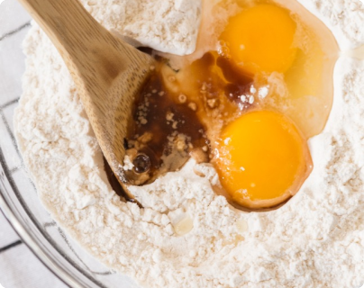
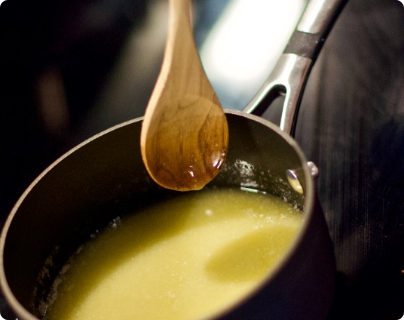
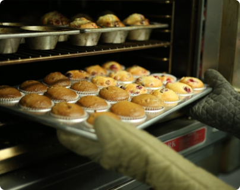

食材
（8人份）
檸檬
300克
細砂糖
30克
吉利丁
4克
水
30克
檸檬汁
3克
六吋海綿蛋糕
雞蛋
8顆
低筋麵粉
320克
全脂牛奶
1大匙
無鹽奶油
1大匙
細砂糖
95克
檸檬糖霜
過篩糖粉
80克
食用水
1大匙
檸檬汁
40克
蛋糕裝飾
料理步驟

1
打發
雞蛋、鹽、糖打發至拉起來，麵糊滴落能清楚出現紋路3～5秒左右才消失即可。
小撇步
2
過篩攪拌
接下來，過篩加入低筋麵粉，可以分2～3次加入，攪拌時用用刮刀以翻拌的方式攪拌。

3
接下來加入奶油（融化成液體）、檸檬汁翻拌均勻。

4
接下來在模具刷油，倒入麵糊，敲2下，用烤箱175°c 30分鐘（建議可以用筷子，讓烤箱門留一點小縫隙）每個人家烤箱溫度不一樣，如果還沒熟可以再自行加一點點時間！
5
烤完後，拿出來放涼，再脫模，這個時候可以來製作糖霜了！將檸檬汁和糖粉攪拌均勻，倒在放涼的檸檬蛋糕上，就完成啦！
小撇步